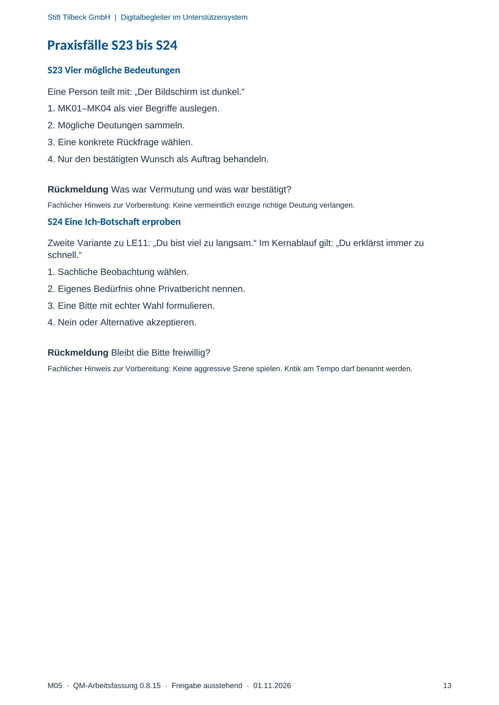

M05 · Originalseite 13
Eine Ich-Botschaft erproben
Original-Druckseite mit S24. Auf derselben Seite stehen außerdem S23. Diese sind dadurch keine zusätzliche Aufgabe.
Fragen und Ankreuzfelder werden auf dem Ausdruck bearbeitet. Die Lesefassung speichert keine Antworten.
Lesefassung · Seite 13
Stift Tilbeck GmbH | Digitalbegleiter im Unterstützersystem
M05 · QM-Arbeitsfassung 0.8.15 · Freigabe ausstehend · 01.11.2026 13
Praxisfälle S23 bis S24
S23 Vier mögliche Bedeutungen
Eine Person teilt mit: „Der Bildschirm ist dunkel.“
1. MK01–MK04 als vier Begriffe auslegen.
2. Mögliche Deutungen sammeln.
3. Eine konkrete Rückfrage wählen.
4. Nur den bestätigten Wunsch als Auftrag behandeln.
Rückmeldung Was war Vermutung und was war bestätigt?
Fachlicher Hinweis zur Vorbereitung: Keine vermeintlich einzige richtige Deutung verlangen.
S24 Eine Ich-Botschaft erproben
Zweite Variante zu LE11: „Du bist viel zu langsam.“ Im Kernablauf gilt: „Du erklärst immer zu
schnell.“
1. Sachliche Beobachtung wählen.
2. Eigenes Bedürfnis ohne Privatbericht nennen.
3. Eine Bitte mit echter Wahl formulieren.
4. Nein oder Alternative akzeptieren.
Rückmeldung Bleibt die Bitte freiwillig?
Fachlicher Hinweis zur Vorbereitung: Keine aggressive Szene spielen. Kritik am Tempo darf benannt werden.
Originalseite ansehen
